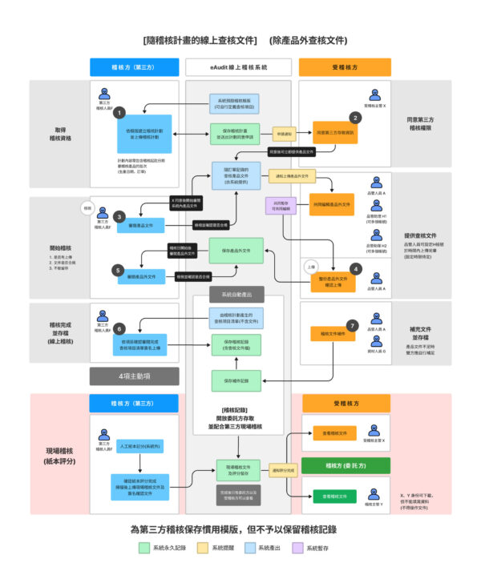
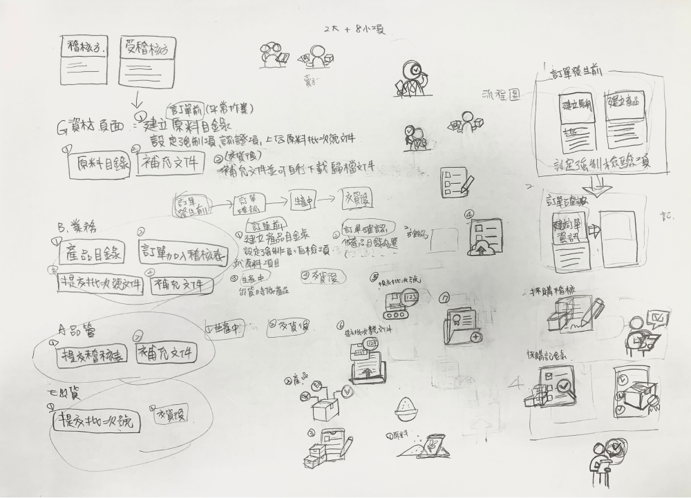
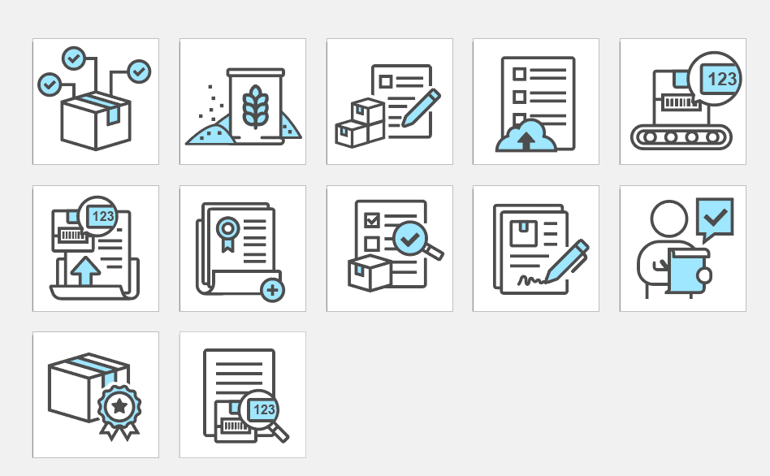
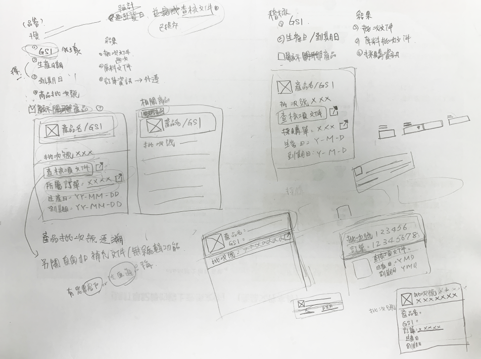

專案說明
延續iPLM產品生命週期系統的開發，以解決年度稽核的方式來吸引廠家使用iPLM。
為提供食品業解決繁瑣的稽核流程，為跨公司提供安全、線上傳遞授權的檔案與評分服務。
擔任的角色
- 前期需求訪談
- 與SA、PO一同參與需求訪談，經過SA消化與分析後，繪製產品流程圖。
- 系統的CIS設計
- 依據需求端給的資訊，設計logo、產品視覺形象、LadingPage。
- UIUX設計
- 協同PO共同繪製wireframe，再進一步設計介面UI，必要時產出Prototype與團隊溝通。
- 前端切版
- 專案進階使用vue3 + el-ement UI Plus 框架，與工程師以Visual Studio協作、Fork做版控，產出畫面供套用。
（團隊其他成員：SA、SD、PG、PO）
LOGO 設計
標準色系
黑色＋藍色
延續iPLM的色系
藍色代表專業、科技感
黑色代表沈穩、專注的力量
設計概念
字體以方剛正直的黑體為主，部分帶入圓潤的轉折做禮貌性的修飾，帶點趣味的放大鏡與瞳孔，又以字體部分簡化相黏的方式，象徵著數位化的意涵。
LadingPage設計
需要推廣給其他業者使用，因此需要一個行銷說明首頁。

流程圖繪製
依據角色的定義來繪製流程圖，用來釐清並確認整個操作流程。
分為兩階段來設計：
1. 隨「訂單記錄」的線上查核文件
2. 隨「稽核計畫」的線上查核文件

系統介面設計
第一次使用 vue3＋el-ement UI Plus與Fork來管理版控

系統登入頁
選單icon繪製
確認每個角色可執行的功能，並依據功能特色來設計icon
先執行手繪稿：

完稿圖：

icon最終擺放：
產品批次號追溯

繪製手稿：
- 釐清畫面需要的欄位與功能
- 確認資訊的重要順序
- UI畫面的初步確認
頁面呈現：

頁面呈現(另開視窗查看產品批次檔案)：

新增訂單記錄
隨訂單做產品相關文件庫的紀錄，作為日後追蹤追溯的基礎。

新增訂單記錄頁

彈窗快速的帶入產品
結果
專案開發歷經好幾個過程，上面展示的是第一階段的部分內容。目前進行到第二階段，後續交由其他同事繼續開發。